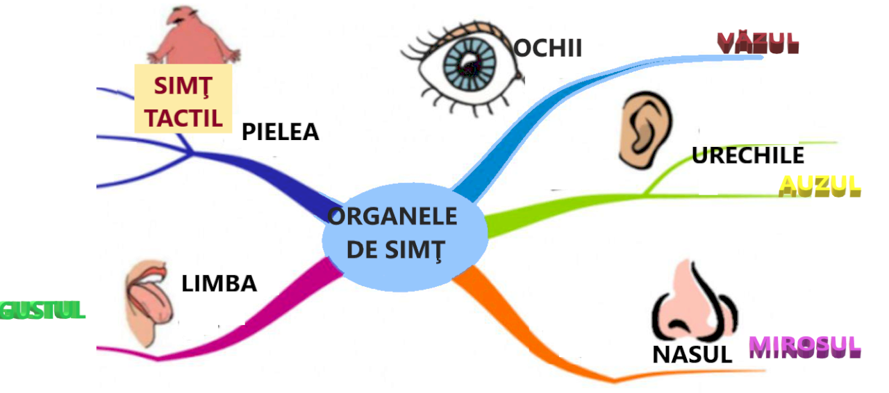

Organele de simț sunt structuri specializate care recepționează stimuli din mediu (luminoși, sonori, chimici, mecanici) și îi transformă în impulsuri nervoase ce ajung la creier, unde sunt interpretate. Sunt esențiale pentru percepția lumii înconjurătoare.
Organele principale de simț includ: ochii (vedere), urechile (auz și echilibru), nasul (miros), limba (gust) și pielea (atingere, temperatură, durere).
Aceste organe ne ajută să interacționăm cu mediul înconjurător, să detectăm pericole, să comunicăm și să experimentăm lumea în moduri diverse.
